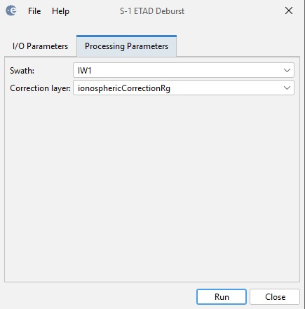

Sentinel-1 ETAD Deburst and Merge
Since the ETAD product is created
based on the SAR processing parameter information given in an input SLC
product, the ETAD corrections are also provided in bursts and
sub-swaths. The adjacent bursts overlap in both the azimuth and range
directions. The ETAD Deburst operator merges the bursts into one
image for user selected correction layer and sub-swath
or all sub-swaths.
Input
- The input to the operator is the Sentinel-1 ETAD product. Here it
is assumed that the ETAD product has already been downloaded from ESA's
Copernicus Data Space Ecosystem (CDSE) hub.
Output
- The output of this operator is the deburst product.
Parameters Used
- Swath: The swath that user want to deburst. Possible selections are as the follows
- Correction layer: User can select one of the following correction layers to deburst
- troposphericCorrectionRg
- ionosphericCorrectionRg
- geodeticCorrectionRg
- dopplerShiftCorrectionRg
- geodeticCorrectionAz
- bistaticShiftCorrectionAz
- fmMismatchCorrectionAz
- sumOfAzimuthCorrections
- sumOfRangeCorrections
